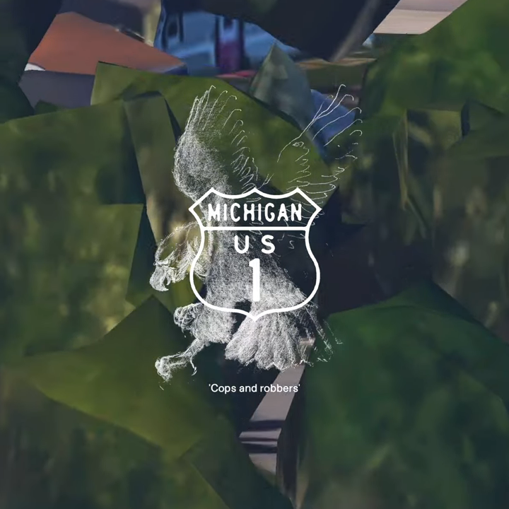

act i
'Cops and robbers' [Wallsocket's first and only bank robbery]



act i
'Cops and robbers' [Wallsocket's first and only bank robbery]
A bank teller flees the town of Wallsocket after being exposed for embezzling money from his clientele for over a decade.
lyrics:
I've been working as a bank teller
For like eleven years
It all started when I didn't have
Enough to pay for the crystal
And ain't it funny how
Outta nowhere, all this money appears?
I've got a cash drawer and a keyboard
And I've got all of your info
When's the last time you saw someone
with a ski mask and a gun
Get on the inside?
You gotta do it, gotta do it, gotta do it like me
When's the last time you saw someone
with a ski mask and a gun
Get on the inside?
You gotta do it, gotta do it, gotta do it like me
I write false checks, I plant the counterfeits
I trim the fat from the vault
I need a John Smith or a Jane Doe
The more common the better!
I resurrect the dead, I hit the ATM,
and I've never been caught
I'm not the bad guy, like, it's just sitting there
And the dead ain't getting any deader
When's the last time you saw someone
with a ski mask and a gun
Get on the inside?
You gotta do it, gotta do it, gotta do it like me
When's the last time you saw someone
with a ski mask and a gun
Get on the inside?
You gotta do it, gotta do it, gotta do it like
Mm, you gotta do it like me
It's a long con
When you catch me I'll be long gone
It's a long road, and I'll be on it 'til the case goes cold
S-s-so long
When you catch me I'll be long gone
It's a long road, and I'll be on it 'til the case goes cold
(Good luck)
I'm in the Super 8 and I've been MIA
for like the past three days
My family hates me, 'cause I heard the APB,
and I made a run for the country
I've found a small town, somewhere to hide out,
until I'm sure that it's safe
'Cause I had a suitcase in the crawlspace,
and it's full of all of your money, ow!
When's the last time you saw someone
with a ski mask and a gun
Get on the inside?
You gotta do it, gotta do it, gotta do it like me
When's the last time you saw someone
with a ski mask and a gun
Get on the inside?
You gotta do it, gotta do it, gotta do it like me
You gotta do it, gotta do it, gotta do it like
Mm, you gotta do it like me
intermission
Locals (Girls like us) [with gabby start]
While the rest of the town is reeling from the bank robbery, three local girls try and figure out how to grow up.
lyrics:
machinery, catharsis, technology, rag-tag, transcendent
slapstick, try-hard, high-strung, neurotic, Blue Cross
golden arches, pearly gates, supermarket, interstate
picket fence, domestic, citizen's arrest, vestibule, two-story
J name, gas station, phantom pain, art therapist
eggshell white, office park, parking garage, mall/retail
micropolitan, turnpike, private property, killing point, agenda
arms, body, legs, flesh, skin, bone, sinew, good luck
arms, body, legs, flesh, skin, bone, sinew, good luck
arms, body, legs, flesh, skin, bone, sinew, good luck!
arms, body, legs, flesh, skin, bone, sinew, good luck
arms, body, legs, flesh, skin, bone, sinew, good luck
arms, body, legs, flesh, skin, bone, sinew, good luck
arms, body, legs, flesh, skin, bone, sinew, good luck
arms, body, legs, flesh, skin, bone, sinew, good luck
Uh, i've done the questionnaire like 700 times
To get the same results as my friend, huh
We've been inseperable since 2009
She just doesn't know 'bout it yet
(Can you feel it?)
arms, body, legs, flesh, skin, bone, sinew, good luck
(can you feel your?)
arms, body, legs, flesh, skin, bone, sinew, good luck
(can you feel your?)
arms, body, legs, flesh
(can you feel your?) skin, bone, sinew, good luck
arms, body, legs, flesh
(can you feel your?) skin, bone, sinew, good luck
Uh, I've done the questionnaire, like never in my life
But I've got a ten-foot pole, huh
And if I could I'd poke her with it right between her eyes
May God rest her soul
(Can you feel your?)
arms, body, legs, flesh, skin, bone, sinew, good luck
(can you feel your?)
arms, body, legs, flesh, skin, bone, sinew, good luck
(can you feel your?)
arms, body, legs, flesh
(can you feel your?) skin, bone, sinew, good luck
(can you feel your?)
arms, body, legs, flesh
(can you feel your?)
(Come on and touch me, ohhhhhhh)
Stop me if you've heard this one before
Girls like us are rotten to the core (let's go!!)
Stop me if you've heard this one before
Girls like us are rotten to the core (Can you feel your?)
(Arms, body, legs, flesh, skin, bone, sinew, good luck)
Stop me if you've heard this one before (Can you feel your?)
(Arms, body, legs, flesh, skin, bone, sinew, good luck)
Girls like us are rotten to the core (Can you feel your?)
(Arms, body, legs, flesh, skin, bone, sinew, good luck)
Stop me if you've heard this one before (Can you feel your? Can you feel your?)
(Arms, body, legs, flesh, skin, bone, sinew, good luck)
Someday life will knock us off our horse (Can you feel your?)
(Arms, body, legs, flesh)
(Touch me, ohhh)
arms, body, legs, flesh, skin, bone, sinew, good luck
arms, body, legs, flesh, skin, bone, sinew, good luck
(And everyone's a critic)
arms, body, legs, flesh, skin, bone, sinew, good luck
(And everything is business)
arms, body, legs, flesh, skin, bone, sinew, good luck
Man, he wiggles when he walks
And he wanted it to stop because
His superficial smile, it got everybody up
The band is playing math, but the boys are talking science
I started laughing at the locals (It'll wrap back around!)
Yeah (yeah), the horse I like is whack (whack), she can't run very fast (fast)
But she's always had my back (yeah, yeah) I bet my bottom dollar
And I bet my britches off (What?) Can you get me back on track?
I started laughing at the locals
(Can you feel your?)
Stop me if you've heard this one before (Can you feel your?)
(Arms, body, legs, flesh, skin, bone, sinew, good luck)
Girls like us are rotten to the core (Can you feel your?)
(Arms, body, legs, flesh, skin, bone, sinew, good luck)
Stop me if you've heard this one before (Can you feel your? Can you feel your?)
(Arms, body, legs, flesh, skin, bone, sinew, good luck)
Girls like us are rotten...(Can you feel your? Can you feel your?)
(Ohhhhhh)
(Arms, body, legs, flesh, skin, bone, sinew...)
Stop me if you've heard this one before (Can you feel your?)
(Arms, body, legs, flesh, skin, bone, sinew, good luck)
Girls like us are rotten to the core (Can you feel your?)
(Arms, body, legs, flesh, skin, bone, sinew, good luck)
Stop me if you've heard this one before (Can you feel your? Can you feel your?)
(Arms, body, legs, flesh, skin, bone, sinew, good luck)
Someday life will knock us off our horse (Can you feel your?) (It'll wrap back around!)
(Arms, body, legs, flesh, skin, bone, sinew, good luck)
Baby, I'm delusional, impractical is crucial (B-baby, b-baby)
Hm, it's the talk of the town, it's the talk of the town
Baby, I'm delusional, impractical is crucial (B-baby, b-baby)
Hm, it's the talk of the town, it's the talk of the town
Baby, I'm delusional, impractical is crucial (B-baby, b-baby)
Hm, it's the talk of the town, it's the talk of the town